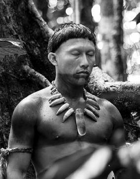
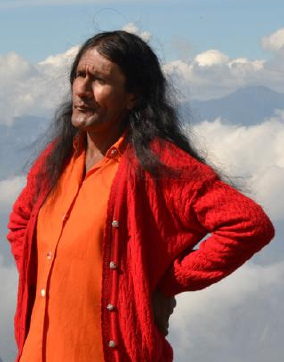
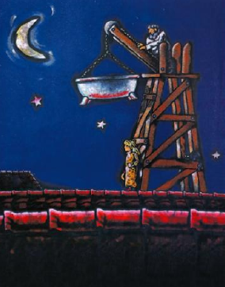

Top 5 de Cine Nuestro

EL abrazo de la serpiente
Ciro Guerra 2016
Karamakate, un chamán amazónico, trabaja con dos científicos por 40 años, buscando una planta curativa sagrada en la selva.

Maria la falda de la montaña
Rubén Mendoza 2017
Boavita es un pueblo campesino,entre las faldas de sus montañas vive la Señorita María Luisa. Tiene 45 años y nació siendo niño.

Maria llena eres de gracia
Joshua Marston 2004
Una adolescente colombiana, desempleada y embarazada, acepta la propuesta de un narcotraficante
Pajáros de Verano
Cristina Gallego - Ciro Guerra 2018
Los orígenes del narcotráfico en Colombia vistos desde los ojos de una familia indígena Wayuu en los años 70.

Estrategia del caracol
Sergio Cabrera 1993
El dueño de una casa quiere que los inquilinos desalojen su propiedad, pero ellos hacen hasta lo imposible por quedarse.